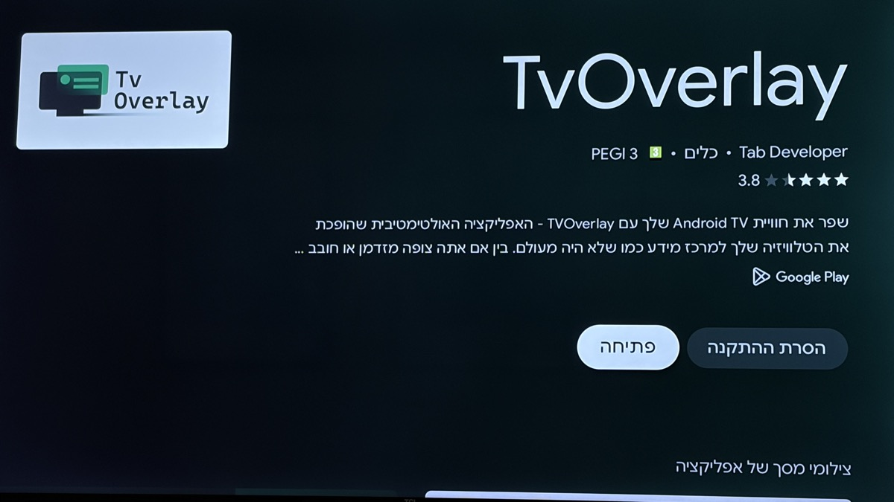

חיבור של Claude Code הוק סיום שיחה (Stop) שמציג את סיכום התשובה האחרונה כהתראה מעל כל תוכן ב-Android TV.
claude --version).jq ו-curl על המק (מותקנים כברירת מחדל ב-macOS).TvOverlay היא אפליקציה חינמית (עם אופציה בתשלום) שחושפת HTTP API על הטלויזיה ומציגה התראות כ-overlay מעל כל תוכן אחר.
com.tabdeveloper.tvoverlayhttps://play.google.com/store/apps/details?id=com.tabdeveloper.tvoverlay ולחץ על Install עם בחירת הטלויזיה כיעד.
איור 1 · TvOverlay ב-Google Play Store
פתח את אפליקציית TvOverlay על הטלויזיה. במסך הראשי תראה בצד שמאל למטה ריבוע QR code תחת הכותרת TvOverlay Remote, ומתחתיו את הכיתוב "You can also connect manually" - שם מופיעה כתובת ה-IP והפורט שצריך להעתיק. בדרך כלל הפורט הוא 5001.

איור 2 · TvOverlay - ה-IP נמצא מתחת ל-QR ב"You can also connect manually" (מסומן באדום)
לצורך הדוגמאות במדריך אנו נניח את הכתובת 192.168.1.149:5001 - החלף בכתובת שלך.
לפני שמגדירים את ההוק, נוודא ששליחת התראה עובדת. מהטרמינל במק:
curl -s -X POST http://192.168.1.149:5001/notify \
-H "Content-Type: application/json" \
-d '{"title":"בדיקה","message":"שלום מהמק","duration":8,"corner":"top_start"}'אם על המסך קפצה התראה - אתה מוכן להמשיך. אם לא, ודא שהטלויזיה פתוחה, שאפליקציית TvOverlay פועלת, ושיש לה הרשאת "Display over other apps".
צור את התיקייה ~/.claude/hooks ובתוכה את הקובץ tv-notify.sh:
mkdir -p ~/.claude/hooks
nano ~/.claude/hooks/tv-notify.shהדבק את התוכן הבא (שנה את ה-IP בראש הקובץ לפי הכתובת שקיבלת):
#!/bin/bash
# Claude Code Stop hook → TvOverlay notification on Android TV.
if [[ -n "$TV_NOTIFY_RUNNING" ]]; then
exit 0
fi
TV="http://192.168.1.149:5001/notify"
INPUT=$(cat)
CWD=$(printf '%s' "$INPUT" | jq -r '.cwd // empty')
TRANSCRIPT=$(printf '%s' "$INPUT" | jq -r '.transcript_path // empty')
PROJECT=$(basename "${CWD:-$PWD}")
RAW=""
if [[ -n "$TRANSCRIPT" && -f "$TRANSCRIPT" ]]; then
RAW=$(jq -r '
select(.type=="assistant" and .message.role=="assistant")
| (.message.content
| if type=="array" then map(select(.type=="text").text) | join(" ") else . end)
| select(. != null)
| gsub("\\s+"; " ")
| gsub("^\\s+|\\s+$"; "")
| select(length > 0)
' "$TRANSCRIPT" 2>/dev/null \
| tail -1 \
| sed -E 's/```[^`]*```//g; s/`[^`]*`//g' \
| sed -E 's/[[:space:]]+/ /g; s/^ //; s/ $//')
fi
BODY=""
if [[ -n "$RAW" ]] && command -v claude >/dev/null 2>&1; then
PROMPT="The text below is an assistant's response from a coding session. Summarize what the assistant did or answered, in ONE short Hebrew sentence (up to 15 words). Return ONLY the Hebrew sentence.
BEGIN_TEXT
${RAW}
END_TEXT"
BODY=$(TV_NOTIFY_RUNNING=1 perl -e 'alarm shift; exec @ARGV' 25 claude -p --model haiku "$PROMPT" 2>/dev/null \
| tr '\n' ' ' | sed -E 's/[[:space:]]+/ /g; s/^ //; s/ $//')
fi
if [[ -z "$BODY" ]]; then
BODY="${RAW:0:250}"
[[ ${#RAW} -gt 250 ]] && BODY="${BODY}…"
fi
[[ -z "$BODY" ]] && BODY="(אין טקסט בתשובה האחרונה)"
MESSAGE="📁 ${PROJECT}"$'\n\n'"${BODY}"
PAYLOAD=$(jq -cn \
--arg title "🤖 Claude סיים" \
--arg msg "$MESSAGE" \
--arg src "Claude Code" \
'{title:$title, message:$msg, source:$src,
smallIcon:"mdi:robot-happy", smallIconColor:"#CC785C",
largeIcon:"mdi:check-circle",
corner:"top_start", duration:15}')
curl -s -m 3 -X POST "$TV" \
-H "Content-Type: application/json" \
-d "$PAYLOAD" > /dev/null 2>&1 &
exit 0שמור (Ctrl+O, Enter, Ctrl+X ב-nano) ותן לקובץ הרשאת הרצה:
chmod +x ~/.claude/hooks/tv-notify.shפתח את ~/.claude/settings.json והוסף את מקטע ה-hooks:
{
"hooks": {
"Stop": [
{
"hooks": [
{
"type": "command",
"command": "/Users/YOUR_USERNAME/.claude/hooks/tv-notify.sh"
}
]
}
]
}
}YOUR_USERNAME בשם המשתמש שלך במק (אפשר לבדוק עם echo $USER). חובה להשתמש בנתיב מוחלט - טילדה (~) לא תעבוד כאן.
cd ~/code/my-projectclaudesmallIcon / largeIcon: מקבלים אייקון מ-Material Design Icons בפורמט mdi:robot-happy, mdi:alert, mdi:bell וכו'.smallIconColor: ערך hex כמו #CC785C (כתום Claude), #FF0000 (אדום), #00FF00 (ירוק).corner: top_start, top_end, bottom_start, bottom_end. שים לב ש-start ו-end מתהפכים ב-RTL: בעברית top_start = ימין, top_end = שמאל.duration: משך ההצגה בשניות (מומלץ 8-15).אם לא רוצה לשלם על שיחות haiku, מחק את כל ה-block של if [[ -n "$RAW" ]] בסקריפט ותישאר רק עם ה-fallback - חיתוך ל-250 תווים של ההודעה כמו שהיא.
--model sonnet).chmod -x ~/.claude/hooks/tv-notify.sh. להדליק שוב: chmod +x.